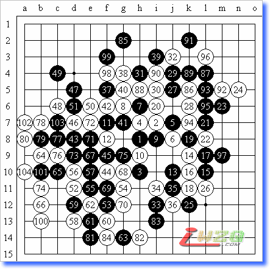

黑：相乐俊 八段 VS 白：安度 5A=41 白104胜
安度是欧洲五子棋界最为耀眼的明星棋手，被赞为“西方连珠世界的天才棋手”。平心而论，这句话并不为过。以他四次获得世界连珠个人锦标赛A组冠军，其中更有一次创造了全胜的纪录，不敢说绝后，至少是空前的。而且他还在2000年的世纪之战中，在番棋赛中以3.5：2.5的成绩战胜了被日本连珠界视为“国宝”，赞誉为“500年一出的天才棋手”，连珠界的“战神”中村茂九段，就此一战终于奠定了安度在世界五子棋界大师级的地位，也是唯一可以同中村分庭抗礼的西方棋手。不过略有遗憾的是，安度是以6局全部执黑赢得这场比赛的。但是，不管怎么说，安度的光芒一时间使得各路强豪为之失色。
相乐俊的年龄几乎长了安度一倍。他是同中村同时代的棋手。在安度还很小的时候，相乐俊就已经是日本一流棋手，在名人战挑战者权决定赛和名人战五番棋赛的舞台上展露身手了。相乐俊最值得自豪的时候是上世纪80年代中期，那时是他的全盛期，下出的棋朝气蓬勃，非常奔放。
1993年的第三届世界连珠个人锦标赛A组比赛中，已经35、6岁的相乐俊八段同还是少年的安度遇上了。尽管那时的安度还非常年少，技术还没有现在娴熟，但是单凭对棋的理解和精深的计算，就让相乐头疼不已。那一届已经连续两次获得A组冠军的中村九段不再参加该项比赛。于是日本其他选手开始对冠军的宝座展开了争夺。毕竟那时的欧洲五子棋整体实力还相对弱一些，日本棋手有理由相信冠军应该属于日本。不过他们忽视了安度的存在，或许说，也就是从这届开始，安度在连珠上的光芒开始显现。
实战是明星布局，这个对于当时的日本高段棋手来说是很常见的，而且当时的研究认为黑白互有机会。相乐执黑开始了攻击。黑5是日本棋手当时认为比较好的打点。现在看来黑5-I9更好。双方演变到白16都是定式。黑17是相乐喜欢的手段，展开侧翼攻击。白18的考虑是打断黑棋两边的联系，尤其是割断上下的联系。黑21局部好手，白22似乎是最强的应对策略。黑23、25是比较好的策略和行棋步调。还是打算借用上下的联系。白26是杜绝黑棋这个念头的重要手段。黑27无奈考虑从上面转身，白28到白32，双方在局部的攻防告一段落，平手。安度没有抢得先手，相乐俊同样也没有占得丝毫便宜。黑33是打开另一战场的策略。在实战中必须根据实际的情况及时调整自己的作战策略，这样才是比较高明的。白34到36双方还是势均力敌，自黑37开始，两位优秀的选手展开了激烈的攻杀，几乎都是近身格斗。可能这也是五子棋令人着迷的乐趣所在吧。双方到90手时，估计时间都非常紧张了。按照正常情况，应该是一局和棋。白98是安度耍的花招，没想到相乐中套了，就这么随手的一防，结果被白棋抓了四四。